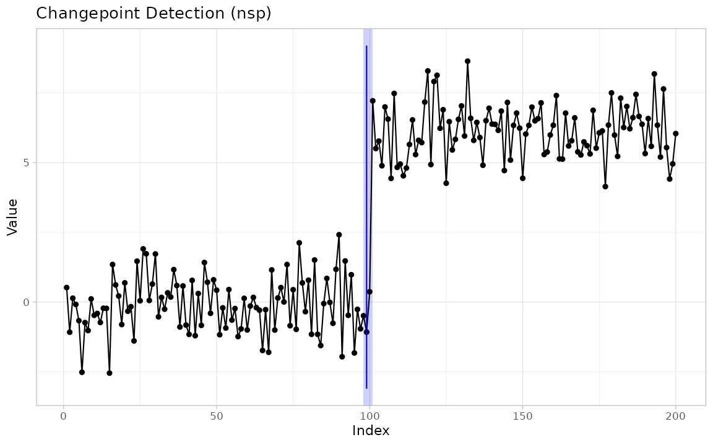
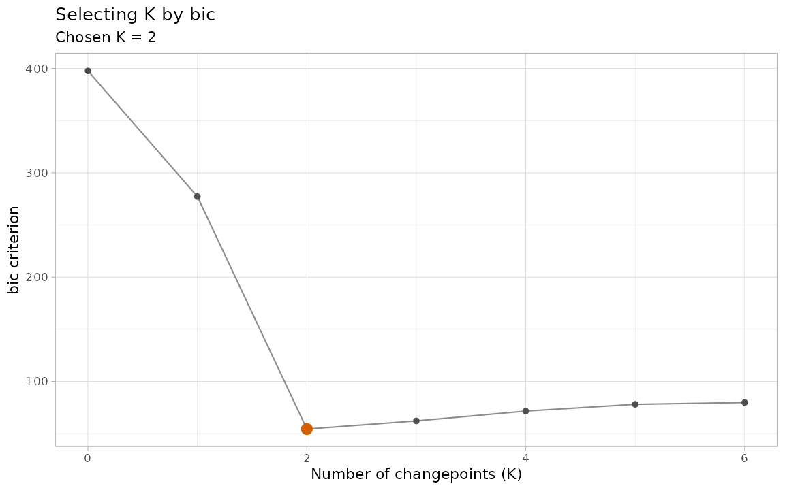
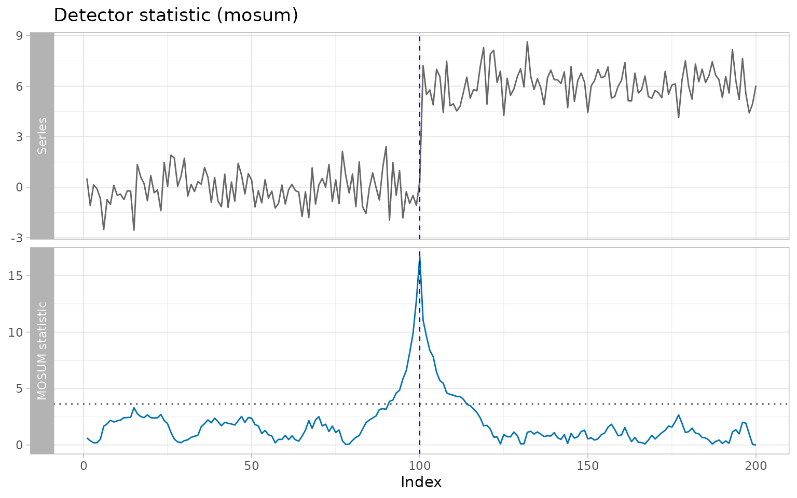
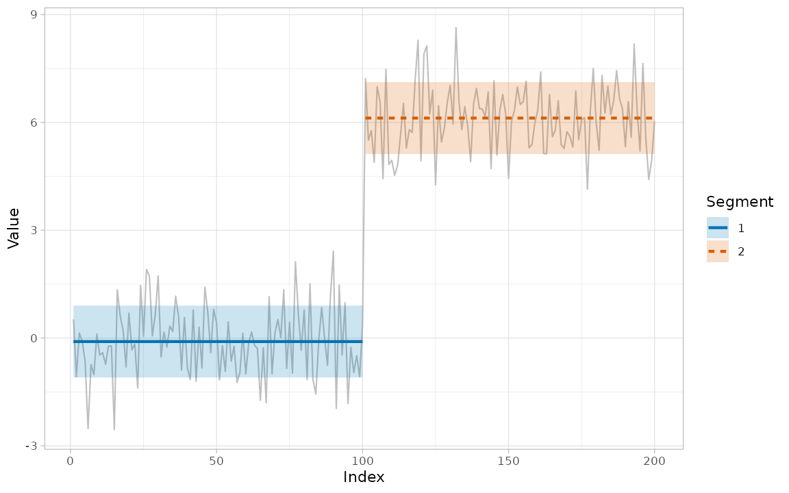
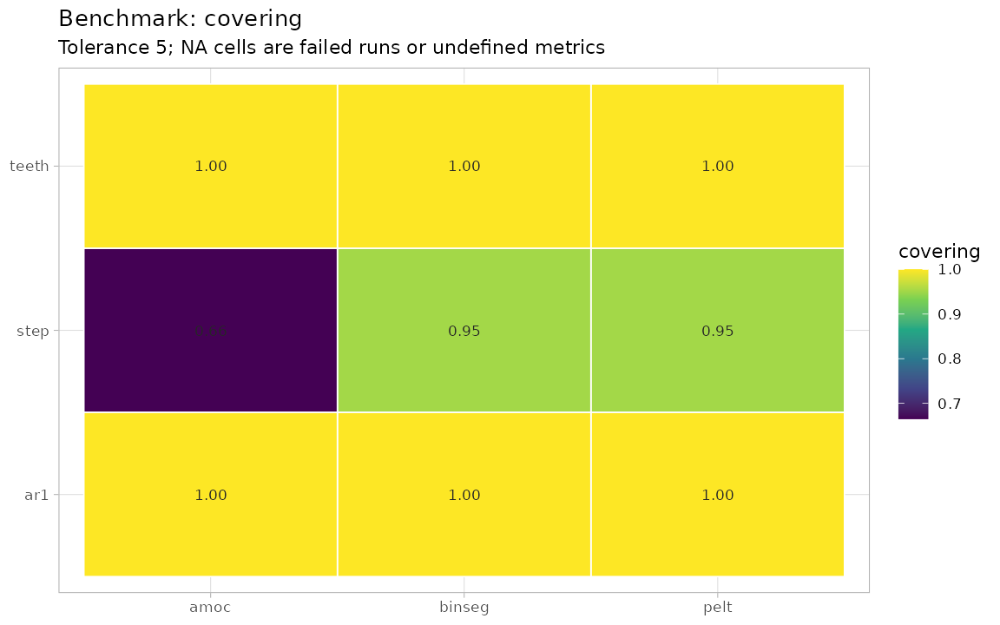
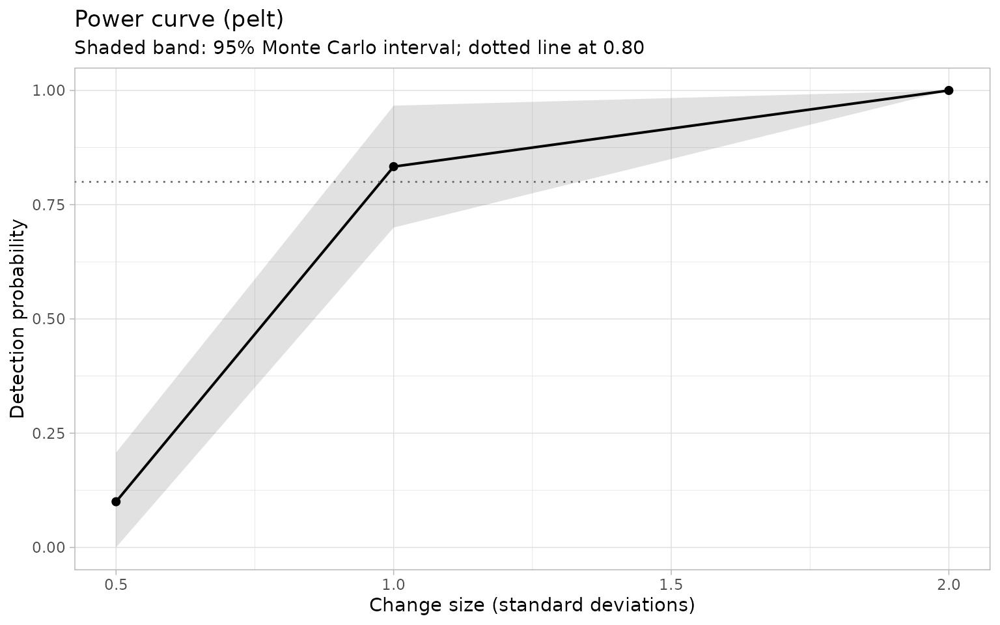

The ggchangepoint Feature Tour: A Complete Map of the Package Surface
Youzhi
Yu
University of Chicago
Source: vignettes/ggchangepoint.Rmd
ggchangepoint.RmdAbstract
ggchangepoint provides a unified, tidy,
ggplot2-native interface to changepoint detection in R: one
dispatcher (cpt_detect()) covering 50 methods across six
methodological families, one result class (ggcpt) with a
stable tidy contract, and one visualisation entry point
(autoplot()) that draws everything a method reports —
including confidence intervals and posterior probabilities (Wickham 2016; Robinson 2017). This vignette is
the feature tour: it visits every exported
function in the package at the point where it belongs in the
workflow, so a reader can map the full surface in one sitting.
Six companion vignettes go deeper:
vignette("introduction") develops the methodology,
vignette("comparison") treats method comparison and
evaluation, vignette("inference") covers confidence
intervals, significance regions, selecting the number of changepoints
and the diagnostic displays, vignette("supervised") covers
labelled regions and learned penalties,
vignette("extending") shows how to bring an external
detector into the same grammar, and vignette("monitoring")
covers sequential detection on a stream and its detection-delay
accounting.
New in 0.5.0. Nineteen further methods; a time index that survives the round trip (
cpt_detect(x, index = dates)andts/xts/zoo/tsibbleinput); significance regions and thecpt_confint()/cpt_test()inference pair;cpt_select()for the number of changepoints; influence, sensitivity, statistic, solution-path and scale-space diagnostics; supervised detection; consensus and method recommendation; event annotation and reports; benchmarking; sequential monitoring; power analysis; andas_ggcpt()/cpt_register_method()for detectors this package does not wrap. Each has its own section below or its own vignette.
The result object and its methods
Every detector returns a ggcpt object: a list carrying
the tidy changepoints tibble (cp = last index
of the left segment, cp_value = series value there, plus
any method-specific columns), a segments table, the
data, the raw engine fit, and metadata
(method, change_in, penalty, convention, runtime).
new_ggcpt() is the low-level constructor and
is_ggcpt() the class test; most users never call either
directly.
res <- cpt_detect(x, method = "pelt", change_in = "mean")
is_ggcpt(res)
#> [1] TRUE
print(res)
#> ggcpt (changepoint detection result)
#> Method: pelt
#> Change in: mean
#> Changepoints found: 1
#> CP convention: left
#> Penalty: MBIC
#> Series length: 200
#>
#> Changepoints:
#> # A tibble: 1 × 2
#> cp cp_value
#> <int> <dbl>
#> 1 100 0.369
manual <- new_ggcpt(
changepoints = tibble::tibble(cp = 100L, cp_value = x[100]),
data = tibble::tibble(index = seq_along(x), value = x),
method = "manual"
)
is_ggcpt(manual)
#> [1] TRUEThe broom verbs give one row per changepoint
(tidy()), a one-row model summary (glance()),
and the data augmented with segment ids, fitted levels, residuals, and a
changepoint flag (augment()):
tidy(res)
#> # A tibble: 1 × 2
#> cp cp_value
#> <int> <dbl>
#> 1 100 0.369
glance(res)
#> # A tibble: 1 × 9
#> n n_changepoints method change_in penalty_type penalty_value cp_convention
#> <int> <int> <chr> <chr> <chr> <dbl> <chr>
#> 1 200 1 pelt mean MBIC NA left
#> # ℹ 2 more variables: total_cost <dbl>, runtime <dbl>
head(augment(res))
#> # A tibble: 6 × 6
#> index value seg_id .fitted .resid is_changepoint
#> <int> <dbl> <int> <dbl> <dbl> <lgl>
#> 1 1 0.521 1 -0.0980 0.619 FALSE
#> 2 2 -1.08 1 -0.0980 -0.982 FALSE
#> 3 3 0.139 1 -0.0980 0.237 FALSE
#> 4 4 -0.0847 1 -0.0980 0.0133 FALSE
#> 5 5 -0.667 1 -0.0980 -0.569 FALSE
#> 6 6 -2.52 1 -0.0980 -2.42 FALSEThe remaining S3 surface: a human-readable digest, tibble/data-frame
coercion, a one-line format, and a base-plot() fallback
that delegates to autoplot().
summary(res)
#> ggcpt Summary
#> Method: pelt
#> Change in: mean
#> Changepoints found: 1
#> CP convention: left
#> Series length: 200
#> Penalty: MBIC
#> Runtime (seconds): 0.02
#>
#> Segments:
#> # A tibble: 2 × 5
#> seg_id start end n param_estimate
#> <int> <int> <int> <int> <dbl>
#> 1 1 1 100 100 -0.0980
#> 2 2 101 200 100 6.12
#>
#> Changepoints:
#> # A tibble: 1 × 2
#> cp cp_value
#> <int> <dbl>
#> 1 100 0.369
as_tibble(res)
#> # A tibble: 1 × 2
#> cp cp_value
#> <int> <dbl>
#> 1 100 0.369
head(as.data.frame(res))
#> cp cp_value
#> 1 100 0.3694259
format(res)
#> [1] "ggcpt [pelt] 1 changepoint(s) on 200 observations"
plot(res)
Unified detection
cpt_detect() is the recommended entry point: pick a
method, say what the change is in (change_in =
"mean", "var", "meanvar",
"slope", "distribution",
"covariance", "network",
"regression" or "seasonality" — the values
cpt_methods() lists in its supports column),
and optionally set a penalty. Incompatible
method/change_in combinations error — they are
never silently substituted.
cpt_detect(x, method = "binseg", change_in = "mean")
#> ggcpt (changepoint detection result)
#> Method: binseg
#> Change in: mean
#> Changepoints found: 1
#> CP convention: left
#> Penalty: MBIC
#> Series length: 200
#>
#> Changepoints:
#> # A tibble: 1 × 2
#> cp cp_value
#> <int> <dbl>
#> 1 100 0.369Anything else in ... reaches the underlying wrapper, and
takes precedence over the value the dispatcher would otherwise derive
from change_in — here the NOT contrast is set directly
rather than inherited:
tidy(cpt_detect(x, method = "not", contrast = "pcwsLinMean"))
#> # A tibble: 1 × 2
#> cp cp_value
#> <int> <dbl>
#> 1 100 0.369cpt_methods() is the live capability table: every method
the package knows, its engine package, what it can detect, and whether
the engine is installed. Five rows carry status "planned"
rather than "available": their engines (gfpop,
robseg, FOCuS, hdbinseg,
changeforest) are not on CRAN, so they are documented as
future work and are not wired to cpt_detect().
print(cpt_methods(), n = Inf)
#> # A tibble: 55 × 15
#> method change_in engine status installed target_release multivariate
#> <chr> <chr> <chr> <chr> <lgl> <chr> <lgl>
#> 1 pelt mean, var, … chang… avail… TRUE NA FALSE
#> 2 binseg mean, var, … chang… avail… TRUE NA FALSE
#> 3 segneigh mean, var, … chang… avail… TRUE NA FALSE
#> 4 amoc mean, var, … chang… avail… TRUE NA FALSE
#> 5 np distribution chang… avail… TRUE NA FALSE
#> 6 ecp distributio… ecp avail… TRUE NA TRUE
#> 7 fpop mean fpop avail… TRUE NA FALSE
#> 8 wbs mean wbs avail… TRUE NA FALSE
#> 9 wbs2 mean break… avail… TRUE NA FALSE
#> 10 not mean, var, … not avail… TRUE NA FALSE
#> 11 mosum mean mosum avail… TRUE NA FALSE
#> 12 idetect mean IDete… avail… TRUE NA FALSE
#> 13 tguh mean break… avail… TRUE NA FALSE
#> 14 smuce mean (with … stepR avail… TRUE NA FALSE
#> 15 hsmuce mean (heter… stepR avail… TRUE NA FALSE
#> 16 cpop slope cpop avail… TRUE NA FALSE
#> 17 bcp mean (Bayes… bcp avail… TRUE NA FALSE
#> 18 bocpd mean (Bayes… ocp avail… TRUE NA FALSE
#> 19 beast mean/trend … Rbeast avail… TRUE NA FALSE
#> 20 cpm distributio… cpm avail… TRUE NA FALSE
#> 21 kcp running sta… kcpRS avail… TRUE NA TRUE
#> 22 npmojo distributio… CptNo… avail… TRUE NA TRUE
#> 23 decafs mean (drift… DeCAFS avail… TRUE NA FALSE
#> 24 sn mean, var, … SNSeg avail… TRUE NA FALSE
#> 25 inspect mean (high-… Inspe… avail… TRUE NA TRUE
#> 26 ocd mean (high-… ocd avail… TRUE NA TRUE
#> 27 geomcp distributio… chang… avail… TRUE NA TRUE
#> 28 strucchange mean, regre… struc… avail… TRUE NA FALSE
#> 29 segmented slope (with… segme… avail… TRUE NA FALSE
#> 30 envcpt mean/trend … EnvCpt avail… TRUE NA FALSE
#> 31 fastcpd mean, var, … fastc… avail… TRUE NA TRUE
#> 32 nsp mean (signi… nsp avail… TRUE NA FALSE
#> 33 mcp mean, slope… mcp avail… TRUE NA FALSE
#> 34 esac mean (high-… HDCD avail… TRUE NA TRUE
#> 35 pilliat mean (high-… HDCD avail… TRUE NA TRUE
#> 36 hdcov covariance … chang… avail… TRUE NA TRUE
#> 37 network network str… chang… avail… TRUE NA TRUE
#> 38 var VAR(1) tran… chang… avail… TRUE NA TRUE
#> 39 hdreg high-dimens… chang… avail… TRUE NA TRUE
#> 40 fmean functional … fChan… avail… TRUE NA TRUE
#> 41 fcov functional … fChan… avail… TRUE NA TRUE
#> 42 kwc covariance … KWCCh… avail… TRUE NA TRUE
#> 43 fabisearch network str… fabis… avail… TRUE NA TRUE
#> 44 wbsts mean (nonst… wbsts avail… TRUE NA FALSE
#> 45 bfast trend and s… bfast avail… TRUE NA FALSE
#> 46 pettitt mean (singl… trend avail… TRUE NA FALSE
#> 47 buishand mean (singl… trend avail… TRUE NA FALSE
#> 48 snht mean (stand… trend avail… TRUE NA FALSE
#> 49 taylor mean (Taylo… Chang… avail… TRUE NA FALSE
#> 50 binsegrcpp mean, meanv… binse… avail… TRUE NA FALSE
#> 51 gfpop mean (graph… gfpop plann… NA when on CRAN NA
#> 52 robust mean (robus… robseg plann… NA when on CRAN NA
#> 53 focus mean (onlin… FOCuS plann… NA when on CRAN NA
#> 54 sbs mean (high-… hdbin… plann… NA when on CRAN NA
#> 55 changeforest distributio… chang… plann… NA when on CRAN NA
#> # ℹ 8 more variables: univariate <lgl>, online <lgl>, ci <lgl>, fitted <lgl>,
#> # posterior <lgl>, statistic <lgl>, path <lgl>, scale_space <lgl>cpt_penalty() constructs standard penalty values for the
engines that take numeric penalties; see its help for the per-engine
penalty semantics.
cpt_penalty("BIC", n = 200)
#> [1] 5.298317
cpt_penalty("MBIC", n = 200)
#> [1] 10.59663
cpt_penalty("Manual", value = 10)
#> [1] 10Engine wrappers
Each engine also has a direct wrapper exposing its native arguments.
Every wrapper from 0.2.0 onwards returns a ggcpt object;
only the two original wrappers below predate the class and still return
a bare tibble.
The classical core (0.1.0)
cpt_wrapper() and ecp_wrapper() are the
original interface to the changepoint/changepoint.np
(Killick et al. 2012; Killick and Eckley 2014;
Haynes et al. 2017) and ecp (Matteson and James 2014; James and Matteson
2014) engines; they return bare tibbles for backward
compatibility.
cpt_wrapper(x, change_in = "mean", cp_method = "PELT")
#> # A tibble: 1 × 2
#> cp cp_value
#> <int> <dbl>
#> 1 100 0.369
ecp_wrapper(x, algorithm = "divisive", seed = 1)
#> # A tibble: 1 × 2
#> cp cp_value
#> <dbl> <dbl>
#> 1 101 7.22The search and pruning wave (0.2.0)
Seven multiscale, randomised, and functional-pruning engines (Fryzlewicz 2014, 2020, 2018; Baranowski et al. 2019; Eichinger and Kirch 2018; Anastasiou and Fryzlewicz 2022; Maidstone et al. 2017), one call each:
fpop_wrapper(x, penalty = 2 * log(length(x)))
#> ggcpt (changepoint detection result)
#> Method: fpop
#> Change in: mean
#> Changepoints found: 1
#> CP convention: left
#> Penalty: Manual = 10.597
#> Series length: 200
#>
#> Changepoints:
#> # A tibble: 1 × 2
#> cp cp_value
#> <int> <dbl>
#> 1 100 0.369
wbs_wrapper(x, n_intervals = 2000, seed = 1)
#> ggcpt (changepoint detection result)
#> Method: wbs
#> Change in: mean
#> Changepoints found: 1
#> CP convention: left
#> Penalty: sSIC
#> Series length: 200
#>
#> Changepoints:
#> # A tibble: 1 × 2
#> cp cp_value
#> <int> <dbl>
#> 1 100 0.369
wbs2_wrapper(x)
#> ggcpt (changepoint detection result)
#> Method: wbs2
#> Change in: mean
#> Changepoints found: 1
#> CP convention: left
#> Penalty: SDLL
#> Series length: 200
#>
#> Changepoints:
#> # A tibble: 1 × 2
#> cp cp_value
#> <int> <dbl>
#> 1 100 0.369
not_wrapper(x, contrast = "pcwsConstMean", seed = 1)
#> ggcpt (changepoint detection result)
#> Method: not
#> Change in: mean
#> Changepoints found: 1
#> CP convention: left
#> Penalty: sSIC
#> Series length: 200
#>
#> Changepoints:
#> # A tibble: 1 × 2
#> cp cp_value
#> <int> <dbl>
#> 1 100 0.369
mosum_wrapper(x)
#> ggcpt (changepoint detection result)
#> Method: mosum
#> Change in: mean
#> Changepoints found: 1
#> CP convention: left
#> Penalty: threshold = 3.6342
#> Series length: 200
#>
#> Changepoints:
#> # A tibble: 1 × 2
#> cp cp_value
#> <int> <dbl>
#> 1 100 0.369
mosum_wrapper(x3, multiscale = TRUE)
#> ggcpt (changepoint detection result)
#> Method: mosum
#> Change in: mean
#> Changepoints found: 2
#> CP convention: left
#> Penalty: threshold
#> Series length: 300
#>
#> Changepoints:
#> # A tibble: 2 × 2
#> cp cp_value
#> <int> <dbl>
#> 1 100 -0.100
#> 2 200 2.90
idetect_wrapper(x, seed = 1)
#> ggcpt (changepoint detection result)
#> Method: idetect
#> Change in: mean
#> Changepoints found: 1
#> CP convention: left
#> Penalty: threshold
#> Series length: 200
#>
#> Changepoints:
#> # A tibble: 1 × 2
#> cp cp_value
#> <int> <dbl>
#> 1 100 0.369
tguh_wrapper(x)
#> ggcpt (changepoint detection result)
#> Method: tguh
#> Change in: mean
#> Changepoints found: 1
#> CP convention: left
#> Penalty: sSIC
#> Series length: 200
#>
#> Changepoints:
#> # A tibble: 1 × 2
#> cp cp_value
#> <int> <dbl>
#> 1 100 0.369The engine wave (0.4.0)
Multiscale inference with confidence.
smuce_wrapper() implements SMUCE (Frick et al. 2014), which bounds the
probability of over-estimating the number of changes at the level
alpha and returns a confidence interval for every
changepoint location (ci_lower/ci_upper);
family = "hsmuce" switches to the heteroskedastic extension
HSMUCE (Pein et al. 2017), which estimates
a variance per segment:
res_smuce <- smuce_wrapper(x, alpha = 0.5)
tidy(res_smuce)
#> # A tibble: 1 × 4
#> cp cp_value ci_lower ci_upper
#> <int> <dbl> <int> <int>
#> 1 100 0.369 100 100Change in slope. cpop_wrapper()
performs exact penalised estimation of a continuous piecewise-linear
mean (Fearnhead et al. 2019; Fearnhead and Grose
2024):
set.seed(5101)
y_slope <- cumsum(c(rep(0.4, 100), rep(-0.3, 100))) + rnorm(200)
res_cpop <- cpop_wrapper(y_slope)
tidy(res_cpop)
#> # A tibble: 1 × 2
#> cp cp_value
#> <int> <dbl>
#> 1 99 40.8Bayesian detection. bcp_wrapper()
implements the Barry–Hartigan product-partition model (Barry and Hartigan 1993; Erdman and Emerson
2007); bocpd_wrapper() runs Bayesian online
changepoint detection over the run-length posterior (Adams and MacKay 2007);
beast_wrapper() wraps the BEAST Bayesian model-averaging
ensemble (Zhao et al. 2019). The first and
third keep the locations whose posterior probability clears
prob_threshold and record it in a
posterior_prob column; BOCPD returns the maximum a
posteriori changepoint set.
res_bcp <- bcp_wrapper(x, seed = 1)
tidy(res_bcp)
#> # A tibble: 1 × 3
#> cp cp_value posterior_prob
#> <int> <dbl> <dbl>
#> 1 100 0.369 1
res_bocpd <- bocpd_wrapper(x)
tidy(res_bocpd)
#> # A tibble: 1 × 2
#> cp cp_value
#> <int> <dbl>
#> 1 100 0.369
res_beast <- beast_wrapper(x, seed = 1)
tidy(res_beast)
#> # A tibble: 1 × 3
#> cp cp_value posterior_prob
#> <int> <dbl> <dbl>
#> 1 100 0.369 1Sequential and kernel nonparametrics.
cpm_wrapper() runs distribution-free sequential tests and
reports, alongside each estimated location, the
detection_time at which a stream monitor would have flagged
it (Ross 2015); kcp_wrapper()
applies kernel change point analysis to running statistics (mean,
variance, autocorrelation, correlation) (Arlot et
al. 2019; Cabrieto et al. 2018); npmojo_wrapper()
detects distributional changes under serial dependence (McGonigle and Cho 2025):
tidy(cpm_wrapper(x, cpm_type = "Mann-Whitney"))
#> # A tibble: 3 × 3
#> cp cp_value detection_time
#> <int> <dbl> <int>
#> 1 23 -1.39 30
#> 2 50 0.426 67
#> 3 100 0.369 104
tidy(kcp_wrapper(x, running_stat = "mean", nperm = 100, seed = 1))
#> # A tibble: 1 × 2
#> cp cp_value
#> <int> <dbl>
#> 1 101 7.22
tidy(npmojo_wrapper(x))
#> # A tibble: 2 × 2
#> cp cp_value
#> <int> <dbl>
#> 1 100 0.369
#> 2 122 8.13Robustness to drift and dependence.
decafs_wrapper() detects abrupt changes when the signal
also drifts and the noise is autocorrelated (Romano et al. 2022); sn_wrapper()
segments a chosen parameter (mean, variance,
autocorrelation, or bivariate correlation) by self-normalisation,
avoiding long-run variance estimation entirely (Zhao et al. 2022);
envcpt_wrapper() reports changepoints only when a
changepoint model beats the trend and autoregressive alternatives (Beaulieu and Killick 2018):
tidy(decafs_wrapper(x))
#> # A tibble: 1 × 2
#> cp cp_value
#> <int> <dbl>
#> 1 100 0.369
tidy(sn_wrapper(x3, parameter = "mean"))
#> # A tibble: 2 × 2
#> cp cp_value
#> <int> <dbl>
#> 1 100 -0.100
#> 2 199 5.53
res_env <- envcpt_wrapper(x, models = c("mean", "meancpt", "trendcpt"))
tidy(res_env)
#> # A tibble: 1 × 2
#> cp cp_value
#> <int> <dbl>
#> 1 100 0.369
res_env$penalty$type # criterion and winning model
#> [1] "AIC: meancpt"High-dimensional and multivariate. These wrappers
take a matrix or data frame with one row per time point.
inspect_wrapper() finds sparse mean changes by projection
(Wang and Samworth 2018);
ocd_wrapper() monitors a high-dimensional stream online
(Chen et al. 2022);
geomcp_wrapper() maps each observation to a distance and an
angle and segments both (Grundy et al.
2020); multivariate ecp input flows through
cpt_detect() unchanged. The univariate wrappers, by
contrast, reject a multi-column argument rather than silently flattening
it.
set.seed(1)
X <- cbind(a = c(rnorm(80), rnorm(80, 4)),
b = c(rnorm(80), rnorm(80, -3)),
c = rnorm(160))
res_hd <- inspect_wrapper(X)
tidy(res_hd)
#> # A tibble: 1 × 3
#> cp cp_value strength
#> <int> <dbl> <dbl>
#> 1 80 -0.590 30.8
# Online detection: the reported locations are declaration times (the change
# plus the detection delay), in a `declared_at` column. Monte Carlo threshold
# calibration makes this the slowest wrapper, so it is shown but not run
# here. It needs at least two coordinates and rejects a univariate series.
res_ocd <- ocd_wrapper(X, mc_reps = 100)
tidy(res_ocd)
tidy(geomcp_wrapper(X))
#> # A tibble: 0 × 2
#> # ℹ 2 variables: cp <int>, cp_value <dbl>
tidy(cpt_detect(X, method = "ecp", seed = 1))
#> # A tibble: 1 × 2
#> cp cp_value
#> <int> <dbl>
#> 1 80 -0.590Regression structure.
strucchange_wrapper() dates Bai–Perron breaks, either in a
bare series or in the coefficients of a formula (Bai and Perron 1998, 2003; Zeileis et al.
2002); segmented_wrapper() fits a continuous
broken-line regression, so the change it reports is a kink in the trend
rather than a jump in the level (Muggeo 2003,
2008). Both carry a confidence interval for every break:
tidy(strucchange_wrapper(x))
#> # A tibble: 1 × 4
#> cp cp_value ci_lower ci_upper
#> <int> <dbl> <int> <int>
#> 1 100 0.369 99 101
tidy(segmented_wrapper(y_slope, npsi = 1, seed = 1))
#> # A tibble: 1 × 4
#> cp cp_value ci_lower ci_upper
#> <int> <dbl> <int> <int>
#> 1 99 40.8 98 101The modern PELT family.
fastcpd_wrapper() exposes the fastcpd engine,
whose family argument covers changes in the mean, the
variance, or both, as well as changes in a fitted AR/ARMA/GARCH model
(Li and Zhang 2024):
tidy(fastcpd_wrapper(x, family = "mean"))
#> # A tibble: 1 × 2
#> cp cp_value
#> <int> <dbl>
#> 1 100 0.369The penalty path
Rather than guessing one penalty, cpt_crops() computes
every optimal segmentation over a penalty interval (the CROPS
algorithm, via changepoint (Killick and
Eckley 2014)) and returns a ggcpt_path object with
its own print(), tidy(), and three
autoplot() types:
path <- cpt_crops(x3)
path
#> ggcpt_path (CROPS penalty path)
#> Change in: mean
#> Penalty range: [5.704, 57.04]
#> Series length: 300
#> Distinct segmentations: 5
#>
#> # A tibble: 5 × 3
#> penalty n_cpts cost
#> <dbl> <int> <dbl>
#> 1 6.69 2 327.
#> 2 6.27 5 307.
#> 3 6.19 8 288.
#> 4 5.76 9 282.
#> 5 5.70 10 276.
tidy(path)
#> # A tibble: 5 × 4
#> penalty n_cpts cost cpts
#> <dbl> <int> <dbl> <list>
#> 1 6.69 2 327. <int [2]>
#> 2 6.27 5 307. <int [5]>
#> 3 6.19 8 288. <int [8]>
#> 4 5.76 9 282. <int [9]>
#> 5 5.70 10 276. <int [10]>
autoplot(path) # the cost elbow
autoplot(path, type = "path") # changepoints vs penalty
autoplot(path, type = "segmentations") # the candidate models themselves
The visualisation layer
autoplot() renders any ggcpt. Options:
show_segments (fitted segment means), show_fit
(the engine’s own fitted signal, where provided — the nine engines
cpt_methods() marks in its fitted column:
SMUCE, HSMUCE, CPOP, bcp, BEAST, DeCAFS, segmented, mcp, bfast),
show_ci (changepoint-location confidence intervals, where
provided — the seven marked in its ci column: SMUCE,
HSMUCE, strucchange, segmented, mcp, bfast, taylor; nsp is
marked there too but reports a region, drawn by
show_regions),
show_points/show_line, an index
for a date axis, and the cptline_* styling arguments
(cptline_color, cptline_alpha,
cptline_type, cptline_linewidth). Asking for
an overlay the result cannot supply warns rather than failing
silently.
autoplot(res, show_segments = TRUE, cptline_color = "firebrick",
cptline_type = "dashed", cptline_linewidth = 0.8)
autoplot(res_smuce, show_ci = TRUE, show_fit = TRUE)
Multivariate results facet automatically:
autoplot(res_hd)
The composable layers work inside any ggplot pipeline:
geom_changepoint() draws vertical rules,
geom_cpt_segment() draws segment levels,
geom_cpt_ci() draws horizontal interval whiskers, and
stat_changepoint() runs detection inside the plot.
theme_ggcpt() is a publication theme and
annotate_segments() shades alternating segments.
cp_tbl <- tidy(res)
df <- data.frame(index = seq_along(x), value = x)
ggplot(df, aes(index, value)) +
annotate_segments(cp = cp_tbl$cp, n = length(x)) +
geom_line() +
geom_changepoint(data = cp_tbl, aes(xintercept = cp), color = "red") +
geom_cpt_segment(
data = res$segments,
aes(x = start, xend = end, y = param_estimate, yend = param_estimate),
inherit.aes = FALSE, color = "darkred", linewidth = 1
) +
theme_ggcpt()
ggplot(df, aes(index, value)) +
geom_line() +
stat_changepoint(method = "pelt", color = "blue")
ci_tbl <- tidy(res_smuce)
ci_tbl$y_pos <- min(x) - 1
ggplot(df, aes(index, value)) +
geom_line(color = "grey60") +
geom_cpt_ci(
data = ci_tbl,
aes(y = y_pos, xmin = ci_lower, xmax = ci_upper),
width = 0.6, color = "blue", inherit.aes = FALSE
) +
geom_changepoint(data = ci_tbl, aes(xintercept = cp), color = "blue")
ggcptplot() and ggecpplot() are the
original one-call plots for the two classical engines:
ggcptplot(x, change_in = "mean", cp_method = "PELT")
ggecpplot(x, algorithm = "divisive", seed = 1)
The Bayesian engines get the field’s signature displays:
ggcpt_posterior() shows the posterior mean over the series
and the per-location changepoint probability (for bcp and
BEAST results); ggcpt_runlength() shows the BOCPD
run-length posterior as a heatmap.
ggcpt_posterior(res_bcp)
ggcpt_runlength(res_bocpd)
Finally, ggcpt_interactive() turns any result (or any
ggplot built from one) into a plotly widget with values on
hover. The widget itself is not embedded here, only its class:
class(ggcpt_interactive(res)) # requires plotly
#> [1] "plotly" "htmlwidget"Comparing methods
ggcpt_compare() runs several detectors on the same
series and renders them faceted (default) or overlaid, honouring
future::plan() for parallel execution;
ggcpt_compare_table() returns the tidy union of the same
runs. A method that finds nothing keeps its panel and contributes an
NA row — “no changepoints” is a result, not a missing
one.
ggcpt_compare(x, methods = c("pelt", "binseg", "amoc"))
ggcpt_compare(x, methods = c("pelt", "binseg"), layout = "overlay")
ggcpt_compare_table(x, methods = c("pelt", "binseg", "amoc"))
#> # A tibble: 3 × 3
#> method cp cp_value
#> <chr> <int> <dbl>
#> 1 pelt 100 0.369
#> 2 binseg 100 0.369
#> 3 amoc 100 0.369Batch detection and stability
cpt_batch() runs one detector over many series (matrix,
data frame, or list of vectors), also under future::plan(),
and returns a tidy ggcpt_batch tibble with list-columns for
the per-series changepoints and the ggcpt objects
themselves:
set.seed(5103)
XB <- cbind(shifted = x, pure_noise = rnorm(200))
batch <- cpt_batch(XB, method = "pelt")
batch
#> ggcpt_batch (2 series, method: pelt)
#>
#> # A tibble: 2 × 2
#> series n_changepoints
#> <chr> <int>
#> 1 shifted 1
#> 2 pure_noise 0
tidy(batch)
#> # A tibble: 1 × 3
#> series cp cp_value
#> <chr> <int> <dbl>
#> 1 shifted 100 0.369
autoplot(batch)
cpt_stability() quantifies how fragile a segmentation
is: it resamples residuals within the fitted segments, re-runs the
detector, and reports the re-detection frequency at every location — a
model-agnostic confidence signal for engines with no native
intervals:
st <- cpt_stability(x, method = "pelt", B = 30, seed = 1)
st
#> ggcpt_stability (30 bootstrap replicates, method: pelt)
#>
#> Original changepoints and their re-detection frequency:
#> # A tibble: 1 × 2
#> cp stability
#> <int> <dbl>
#> 1 100 1
autoplot(st)
Evaluation against ground truth
cpt_metrics() scores predictions against a known truth:
precision, recall and F1 under one-to-one matching, the covering metric
and adjusted Rand index in the conventions of van den Burg and Williams
(2020), Hausdorff distance, annotation error, and matched
MAE/RMSE. cpt_metrics_annotated() averages over multiple
annotators, and ggcpt_eval() draws the agreement (true
positives, false positives, and misses):
truth <- 100
pred <- tidy(res)$cp
cpt_metrics(pred, truth, n = length(x), margin = 5)
#> # A tibble: 1 × 12
#> n n_pred n_truth precision recall f1 covering hausdorff rand_index
#> <int> <int> <int> <dbl> <dbl> <dbl> <dbl> <dbl> <dbl>
#> 1 200 1 1 1 1 1 1 0 1
#> # ℹ 3 more variables: annotation_error <int>, mae_matched <dbl>,
#> # rmse_matched <dbl>
cpt_metrics_annotated(pred, list(100, 101, 99), n = length(x))
#> # A tibble: 1 × 7
#> n n_annotators n_pred precision recall f1 covering
#> <int> <int> <int> <dbl> <dbl> <dbl> <dbl>
#> 1 200 3 1 1 1 1 0.993
ggcpt_eval(pred, truth, x, margin = 5)
Simulation and canonical signals
cpt_simulate() (alias rcpt()) generates
series with known changepoints in mean, variance, both, or slope, under
Gaussian, Student-t, AR(1), or random-walk noise; the truth travels with
the data in the true_changepoints and
true_segments attributes. Five canonical test signals from
the literature ship ready-made: signal_blocks() (the
Donoho–Johnstone blocks signal (Donoho and
Johnstone 1994)), signal_fms(),
signal_mix(), signal_teeth(), and
signal_stairs().
sim <- cpt_simulate(300, changepoints = c(100, 200), change_in = "mean",
params = c(0, 5, 1), seed = 1)
attr(sim, "true_changepoints")
#> [1] 100 200
sim2 <- rcpt(300, changepoints = 150, params = c(0, 3), seed = 2) # the alias
attr(sim2, "true_changepoints")
#> [1] 150
signals <- list(blocks = signal_blocks(1024, seed = 1),
fms = signal_fms(500, seed = 1),
mix = signal_mix(500, seed = 1),
teeth = signal_teeth(400, seed = 1),
stairs = signal_stairs(500, seed = 1))
vapply(signals, function(s) length(attr(s, "true_changepoints")), integer(1))
#> blocks fms mix teeth stairs
#> 11 7 5 3 9
blocks <- signals$blocks
ggplot(blocks, aes(index, value)) +
geom_line(color = "grey50") +
geom_vline(xintercept = attr(blocks, "true_changepoints"),
color = "blue", linewidth = 0.3) +
labs(title = "The blocks test signal with its true changepoints")
Citing the methodology
cpt_cite() returns the verified reference(s) behind a
result or a method name, so a write-up can cite the right paper without
leaving R; called with no argument it returns the whole
method-to-reference table.
cpt_cite("pelt")
#> [pelt] Killick, R., Fearnhead, P. and Eckley, I. A. (2012). Optimal detection of changepoints with a linear computational cost. Journal of the American Statistical Association, 107(500), 1590-1598.
cpt_cite(res)
#> [pelt] Killick, R., Fearnhead, P. and Eckley, I. A. (2012). Optimal detection of changepoints with a linear computational cost. Journal of the American Statistical Association, 107(500), 1590-1598.The 0.5.0 surface
The sections above are the 0.4.0 tour. What follows visits the rest of the exported surface, one example each; four companion vignettes develop these properly.
Time indices
cpt_detect(index = ) attaches a clock. Detection still
runs on positions, because every engine assumes an equally spaced
sequence, but tidy(), augment(),
autoplot() and the reporting functions all speak in the
user’s units. as_cpt_series() is the coercion underneath,
and it accepts ts, xts, zoo and
tsibble directly.
dates <- as.Date("2020-01-01") + seq_along(x) - 1
dated <- cpt_detect(x, method = "pelt", index = dates)
tidy(dated)
#> # A tibble: 1 × 3
#> cp cp_index cp_value
#> <int> <date> <dbl>
#> 1 100 2020-04-09 0.369
cpt_detect(data.frame(day = dates, v = x), y = v, index = day,
method = "pelt")$changepoints$cp_index
#> [1] "2020-04-09"as_cpt_series() is that coercion on its own, returning
the values, the index and a label for the axis:
str(as_cpt_series(x, index = dates), max.level = 1)
#> List of 3
#> $ values : num [1:200] 0.5206 -1.0797 0.1392 -0.0847 -0.6666 ...
#> $ index : Date[1:200], format: "2020-01-01" "2020-01-02" ...
#> $ index_label: chr "Index"
as_cpt_series(ts(x, start = c(2020, 1), frequency = 12))$index_label
#> [1] "Time"Inference
nsp_wrapper() returns significance regions, read with
cpt_regions() and drawn by geom_cpt_region().
cpt_confint() unifies four interval routes;
cpt_test() attaches a test and flags whether it is
selection-adjusted.
cpt_confint(res, method = "bootstrap", B = 30, seed = 1)
#> # A tibble: 1 × 6
#> cp ci_lower ci_upper level source n_replicates
#> <int> <int> <int> <dbl> <chr> <int>
#> 1 100 100 100 0.95 bootstrap 30
suppressWarnings(cpt_test(res))[, c("cp", "estimate", "p_value",
"selection_adjusted")]
#> # A tibble: 1 × 4
#> cp estimate p_value selection_adjusted
#> <int> <dbl> <dbl> <lgl>
#> 1 100 6.22 1.61e-105 FALSE
autoplot(nsp_wrapper(x, M = 100, seed = 1))
Selecting the number of changepoints
sel <- cpt_select(x3, criterion = "bic", k_max = 6)
sel$k
#> [1] 2
autoplot(sel)
Diagnostics
cpt_influence() and cpt_leverage() say
which observation drives the answer; cpt_sensitivity() says
which setting does; cpt_statistic(),
cpt_solution_path() and cpt_scale_space()
(with their ggcpt_*() plots, reachable from
autoplot(type = )) say what the detector actually
computed.
inf <- cpt_influence(res, engine = "recompute", subset = seq(1, 200, by = 20))
head(cpt_leverage(inf), 3)
#> # A tibble: 3 × 5
#> index delta_n_cp max_shift param_shift leverage
#> <int> <int> <dbl> <dbl> <dbl>
#> 1 121 0 0 0.0180 1.75
#> 2 161 0 0 0.0130 0.832
#> 3 101 0 0 0.0111 0.484
cpt_sensitivity(x, method = "pelt", over = list(penalty = c(4, 40)))$grid[, 1:2]
#> # A tibble: 2 × 2
#> penalty n_cp
#> <dbl> <int>
#> 1 4 7
#> 2 40 1
autoplot(cpt_detect(x, method = "mosum"), type = "statistic")
Supervised detection
labs <- cpt_labels(c(80, 140), c(120, 190), c("one_change", "no_change"))
cpt_label_error(res, labs)[, c("start", "end", "change", "status")]
#> # A tibble: 2 × 4
#> start end change status
#> <int> <int> <chr> <chr>
#> 1 80 120 one_change correct
#> 2 140 190 no_change correctas_cpt_labels() converts a plain ground-truth set into
labels, cpt_label_error_curve() traces the errors across a
penalty grid, and cpt_learn_penalty() fits a penalty from
several labelled series — see
vignette("supervised", package = "ggchangepoint").
Choosing and combining methods
cpt_recommend(noise = "heavy")
#> Recommended methods for: univariate series, change in mean, heavy noise
#>
#> 1. cpm (cpm)
#> why: handles change_in = "mean"; built for heavy noise
#> 2. kcp (kcpRS)
#> why: handles change_in = "mean"; built for heavy noise
#> 3. nsp (nsp)
#> why: handles change_in = "mean"; built for heavy noise
#> 4. sn (SNSeg)
#> why: handles change_in = "mean"; built for heavy noise
#> 5. bcp (bcp)
#> why: handles change_in = "mean"
#>
#> (27 further candidate(s); the full table is the return value.)
#>
#> Cite the method you use with cpt_cite(). Cross-check the choice with
#> cpt_consensus() and cpt_sensitivity().
tidy(cpt_consensus(x3, methods = c("pelt", "binseg", "amoc")))
#> # A tibble: 2 × 5
#> cp cp_value votes methods spread
#> <int> <dbl> <int> <chr> <int>
#> 1 100 -0.100 3 amoc, binseg, pelt 0
#> 2 200 2.90 2 binseg, pelt 0Communication
cpt_annotate_events(dated,
data.frame(when = as.Date("2020-04-10"),
what = "policy change"))
#> ggcpt_events (tolerance 5 position(s))
#> Changepoints explained by an event: 1
#> Changepoints with no event: 0
#> Events with no changepoint: 0
#>
#> Matched:
#> # A tibble: 1 × 6
#> cp cp_index event event_value event_position distance
#> <int> <date> <chr> <date> <int> <int>
#> 1 100 2020-04-09 policy change 2020-04-10 101 1cpt_report() assembles the whole analysis into markdown,
and cpt_gt() renders a publication table (falling back to a
tibble, with a note, when gt is not installed):
cpt_gt(res, title = "Detected changepoints")| Detected changepoints | |||||
| 1 changepoint(s) in mean over 200 observations; penalty MBIC | |||||
| # | Location | Value at change | Level before | Level after | Change |
|---|---|---|---|---|---|
| 1 | 100 | 0.369 | -0.098 | 6.122 | 6.22 |
geom_cpt_event() draws the events.
scale_colour_cpt(), scale_fill_cpt(),
scale_linetype_cpt(), scale_fill_cpt_label()
and scale_colour_cpt_label() are the colour-vision-safe
scales — the Okabe-Ito palette, plus a linetype scale so that colour is
never the only channel carrying a distinction. All three at once, on the
fitted segmentation:
aug <- augment(res)
ggplot(aug, aes(index, .fitted, colour = factor(seg_id),
linetype = factor(seg_id))) +
geom_line(aes(y = value), colour = "grey75", linetype = "solid") +
geom_ribbon(aes(ymin = .fitted - 1, ymax = .fitted + 1,
fill = factor(seg_id)), alpha = 0.2, colour = NA) +
geom_line(linewidth = 1) +
scale_colour_cpt() + scale_fill_cpt() + scale_linetype_cpt() +
labs(x = "Index", y = "Value", colour = "Segment", fill = "Segment",
linetype = "Segment")
theme_ggcpt() is unchanged.
Benchmarking
bm <- cpt_benchmark(cpt_datasets(n = 200, seed = 1,
names = c("step", "teeth", "ar1")),
methods = c("pelt", "binseg", "amoc"), progress = FALSE)
autoplot(bm)
cpt_annotations(cpt_datasets(n = 200, names = "step"))
#> # A tibble: 2 × 3
#> dataset annotator cp
#> <chr> <chr> <int>
#> 1 step 1 66
#> 2 step 1 133cpt_load_tcpd() downloads and caches the Turing Change
Point Dataset; it is not run here because it needs a network
connection.
Streaming
set.seed(5104)
mon <- cpt_replay(c(rnorm(200), rnorm(200, 3)), method = "edetector")
alarms(mon)
#> # A tibble: 3 × 3
#> time statistic threshold
#> <int> <dbl> <dbl>
#> 1 65 223. 100
#> 2 102 3027. 100
#> 3 272 196. 100
cpt_delay(mon, truth = 200)
#> ggcpt_delay
#> True changes: 1
#> Detected: 1
#> Mean delay: 2
#> Median delay: 2
#> False alarms: 2
#> Average run length: 200
#>
#> # A tibble: 1 × 4
#> truth alarm delay detected
#> <int> <int> <dbl> <lgl>
#> 1 200 202 2 TRUEcpt_monitor() and cpt_update() are the
incremental form: mon <- cpt_update(mon, new_obs) as
data arrive.
Power and study design

cpt_min_detectable() inverts the curve — it bisects for
the change size that reaches a target power, which is the number a
pre-registration needs:
cpt_min_detectable(n = 150, n_sim = 15, max_iter = 3, seed = 1)$jump
#> [1] 1.325cpt_scenarios() builds the grid a simulation study
varies over as data rather than as nested loops, so it can be inspected,
filtered and passed straight to cpt_benchmark():
cpt_scenarios(n = c(200, 500), jump = c(1, 2), as_datasets = FALSE)
#> # A tibble: 4 × 7
#> n jump location noise change_in rho scenario
#> <int> <dbl> <dbl> <chr> <chr> <dbl> <chr>
#> 1 200 1 0.5 gauss mean 0 mean_n200_j1_gauss
#> 2 500 1 0.5 gauss mean 0 mean_n500_j1_gauss
#> 3 200 2 0.5 gauss mean 0 mean_n200_j2_gauss
#> 4 500 2 0.5 gauss mean 0 mean_n500_j2_gaussExtending
fit_ext <- as_ggcpt(c(100), x, method = "external_detector")
glance(fit_ext)[, c("method", "n_changepoints")]
#> # A tibble: 1 × 2
#> method n_changepoints
#> <chr> <int>
#> 1 external_detector 1
cpt_register_method("biggest_jump",
fn = function(x, ...) which.max(abs(diff(x))),
engine = "example")
cpt_detect(x, method = "biggest_jump")$changepoints$cp
#> [1] 100
subset(cpt_methods(), status == "registered")[, c("method", "engine")]
#> # A tibble: 1 × 2
#> method engine
#> <chr> <chr>
#> 1 biggest_jump example
cpt_registered_methods()
#> # A tibble: 1 × 4
#> method change_in engine has_citation
#> <chr> <chr> <chr> <lgl>
#> 1 biggest_jump mean example FALSE
cpt_unregister_method("biggest_jump")cpt_install_engines() installs a family of engines at a
time:
cpt_install_engines("bayesian", dry_run = TRUE)[, c("package",
"installed_before")]
#> # A tibble: 4 × 2
#> package installed_before
#> <chr> <lgl>
#> 1 bcp TRUE
#> 2 ocp TRUE
#> 3 Rbeast TRUE
#> 4 mcp TRUEClosing note
This tour visited every exported function in the package. For the
framework’s design, the mathematics of the wrapped methods, and worked
analyses, see
vignette("introduction", package = "ggchangepoint"); for
method comparison and accuracy evaluation in depth, see
vignette("comparison", package = "ggchangepoint"); and for
the 0.5.0 additions in depth, see vignette("inference"),
vignette("supervised"), vignette("extending")
and vignette("monitoring").